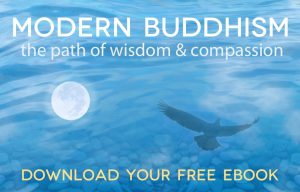

What's new about this Kadampa tradition?
Kadampa Buddhism began in the 11th century when the mediation master Atisha visited Tibet from India. So why is this "new"? Below are a few words from the national spiritual director of Australasia & South East Asia, Gen Kelsang Rabten, to explain just this and why it is so applicable to the people of these modern times across the world regardless of their cultural backgrounds and belief's.
The New Kadampa Tradition was founded in 1991 by Geshe Kelsang Gyatso, more affectionately known by his student as Geshe-La. This humble monk was invited to the UK in 1977 and spent several years teaching the students of Conishead priory as requested by his root guru Trijang Rinpoche.
After many years he saw that traditional teaching methods were difficult to assimilate into the everyday lives of modern people. Geshe-La made requests to his spiritual guide to change the presentation of conventional Kadampa Buddhism to be more inclusive of the needs of his students originating from all over the western world. Trijang Rinpoche advised that whatever he did, he must not change the meaning and continue the oral tradition passed in an unbroken lineage from guru to disciple back to the founder Buddha Shakyamuni in 2600 BC.
In 1987 Geshe-La entered into a three-year retreat where he began to structure an educational programme suited to his students and the foundations of a new tradition that would later flourish into over 1300 meditation centers and six temples worldwide. This modern presentation has quickly become popular amongst people from all walks of life with varying degrees of time to study and practice.
Geshe-La has asked that the book linked below get distributed for free so people can read these ancient teachings in a modern format a paragraph at a time before bed, on the train or anytime when they might have to whip out their electronic device. This way, people can test out for themselves the benefits of these methods to reduce suffering and increase happiness in their own lives.
Click on the below image to download your free electronic copy of the book "Modern Buddhism", with no sign up required.
